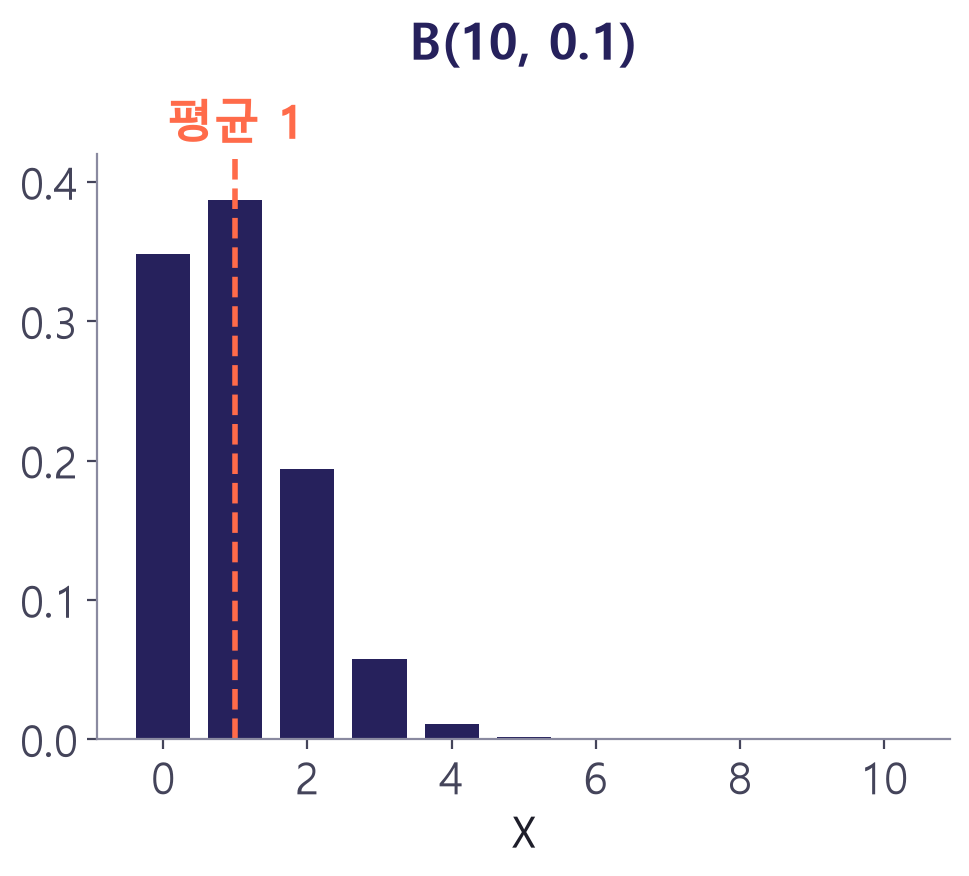
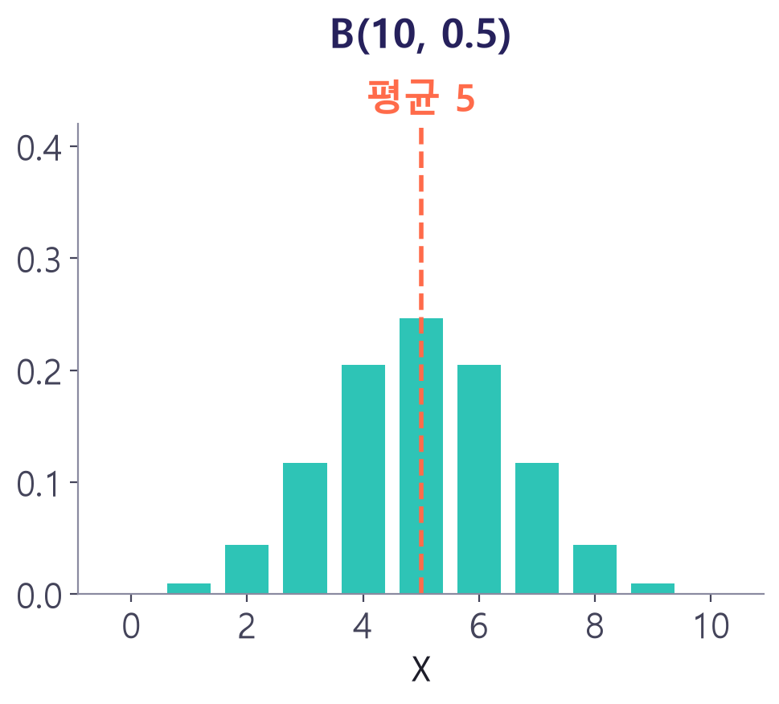
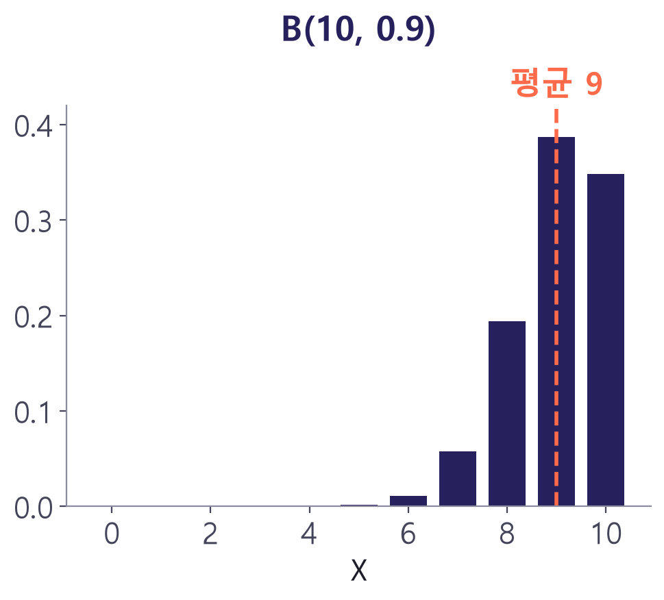
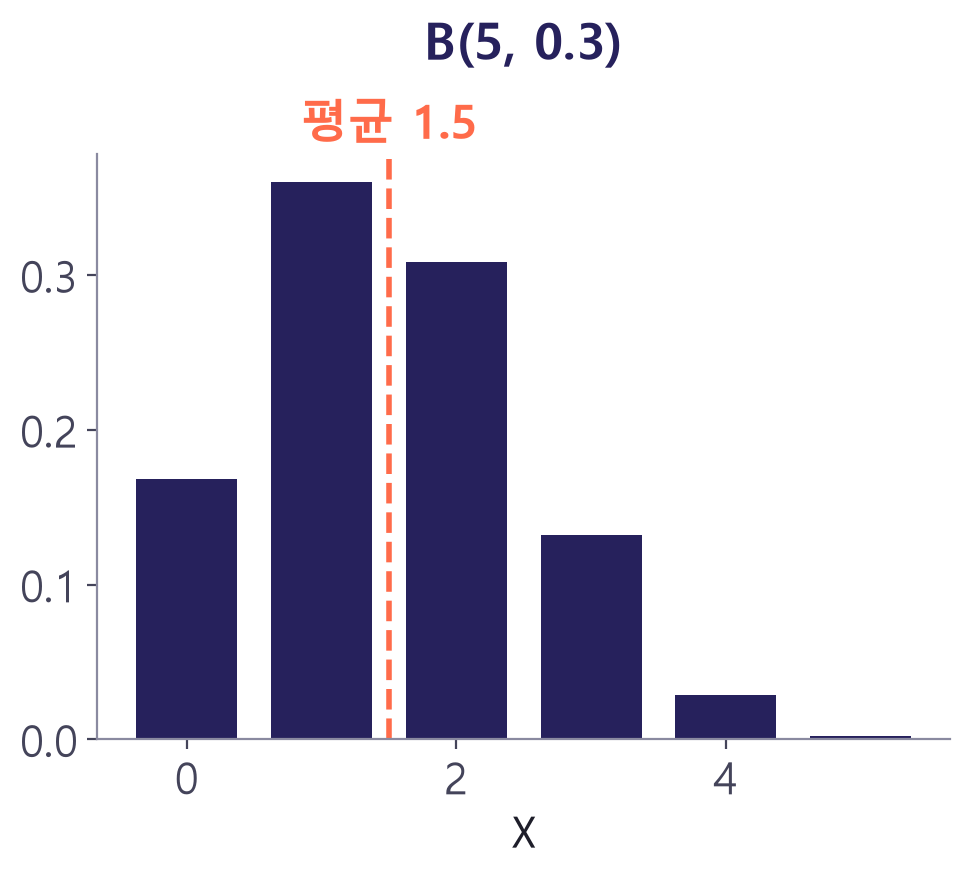
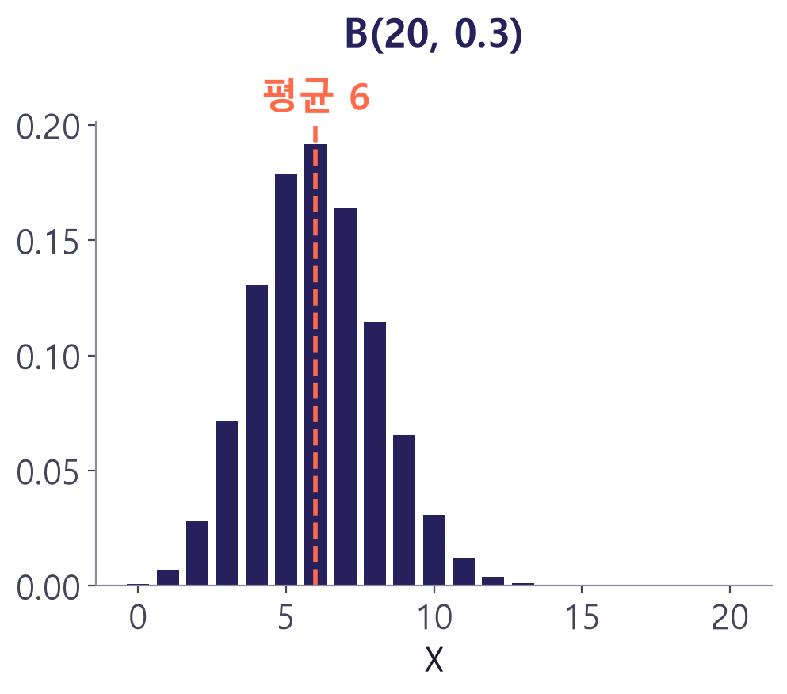
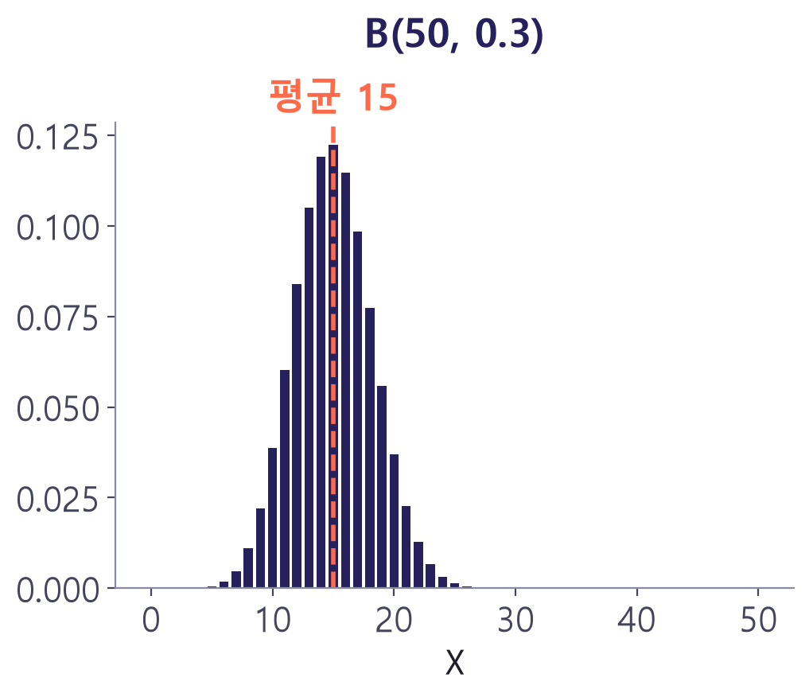

이항분포
성공·실패를 n번 반복할 때의 분포
확률과 통계 · 공과대학 1학년
이미지: Google Flow로 생성
학습목표
7주차이항분포의 뜻과 확률 계산
이항분포의 평균·분산·표준편차
n, p에 따른 분포 모양과 샘플링 검사 적용
복습: 독립시행의 확률
7주차- 한 번에 성공할 확률 p인 시행을 n번 독립적으로 반복
- 성공이 r번일 확률: nCr pr qn−r (q = 1 − p)
- 성공 횟수 X 자체를 확률변수로 보면 → 이항분포

갈턴 보드: 이항분포를 눈으로 보기
- 못에 부딪힐 때마다 왼쪽·오른쪽 중 하나로 이동 (확률 1/2)
- 오른쪽으로 꺾인 횟수 = 이항분포를 따르는 확률변수
- 바닥에 쌓인 공의 모양 = 이항분포의 그래프
이항분포의 정의
7주차한 번의 시행에서 사건 A가 일어날 확률이 p일 때, n번의 독립시행에서 A가 일어나는 횟수 X의 확률분포
기호 B(n, p)로 표시, q = 1 − p
'이항'이라는 이름의 유래
7주차- (q + p)n을 이항정리로 전개한 각 항 = 각 확률
- nC0qn + nC1pqn−1 + … + nCnpn
- (q + p)n = 1n = 1 → 확률의 합이 1
- 3주차 이항정리·파스칼의 삼각형과 연결
이항분포의 확률 계산
샘플링 검사에 적용
표본 10개 중 불량품 개수
7주차- X ~ B(10, 0.1)
- P(X = 0) = 0.910 ≈ 0.349
- P(X = 1) = 10C1 × 0.1 × 0.99 ≈ 0.387
실제로 1000번 검사해 보면
7주차
컴퓨터 시뮬레이션 1000회의 상대도수 ≈ 이론값 B(10, 0.1)
계산 도구 활용
7주차- 엑셀: =BINOM.DIST(1, 10, 0.1, FALSE) → 0.387
- 누적 P(X ≤ 1): =BINOM.DIST(1, 10, 0.1, TRUE) → 0.736
- 파이썬: scipy.stats.binom.pmf(1, 10, 0.1) → 0.387
- n이 크면 손 계산 대신 도구 사용
| 구하는 값 | 엑셀 함수 |
|---|---|
| P(X = r) | BINOM.DIST(r, n, p, FALSE) |
| P(X ≤ r) | BINOM.DIST(r, n, p, TRUE) |
이항분포의 평균과 분산
n과 p만 알면 바로 계산
이항분포의 평균과 분산
7주차복잡한 합 계산 없이 n과 p만으로 바로 계산
예: B(10, 0.1) → 평균 1, 분산 0.9, 표준편차 ≈ 0.949
| 분포 | 평균 np | 분산 npq |
|---|---|---|
| B(4, 0.5) | 2 | 1 |
| B(10, 0.1) | 1 | 0.9 |
| B(100, 0.01) | 1 | 0.99 |
평균과 분산의 직관
7주차- 평균 np: 성공률 30%로 100번 → 약 30번 성공
- 분산 npq: p = 0.5일 때 최대 (결과 예측이 가장 어려움)
- p가 0 또는 1에 가까우면 분산 작음 (결과가 거의 정해짐)
n과 p에 따른 모양
치우침과 종 모양
p에 따른 모양 (n = 10)
7주차


p < 0.5: 왼쪽으로 치우침 / p = 0.5: 좌우 대칭 / p > 0.5: 오른쪽으로 치우침
n에 따른 모양 (p = 0.3)
7주차


n이 커질수록 종 모양에 가까워짐 → 8주차 정규분포로 연결
100비트 패킷의 오류
7주차- X ~ B(100, 0.01)
- E(X) = 100 × 0.01 = 1
- P(X = 0) = 0.99100 ≈ 0.366
샘플링 검사의 합격 판정
7주차- X ~ B(20, p), 합격 = P(X ≤ 1)
- P(X ≤ 1) = q20 + 20pq19
- p = 0.05 → 0.736, p = 0.1 → 0.392
불량률에 따른 로트 합격 확률
7주차검사 기준(표본 수 n, 합격 기준 개수)을 바꾸면 곡선 모양 변화
확인 퀴즈
7주차X ~ B(5, 0.2)일 때 P(X = 0)
→ 0.85 = 0.32768 ≈ 0.328
X ~ B(50, 0.4)의 평균과 분산
→ E(X) = 20, V(X) = 50 × 0.4 × 0.6 = 12
평균 6, 분산 4.2인 이항분포 B(n, p)의 n과 p
→ q = 4.2/6 = 0.7 → p = 0.3, n = 20
7주차 정리
이항분포 B(n, p)
P(X = r) = nCr pr qn−r
평균·분산
E(X) = np, V(X) = npq
모양
p = 0.5면 대칭, n이 크면 종 모양
공학 활용
샘플링 검사, 통신 오류, OC 곡선
다음 주: 연속확률변수와 정규분포
이미지 출처
7주차| 자료 | 작가 | 라이선스 |
|---|---|---|
| 주차 표지 이미지 | Google Flow로 생성 | AI 생성 |
| GaltonBoard | Mark Hebner | CC BY-SA 4.0 |
사진: Wikimedia Commons의 자유 라이선스 이미지 · 그래프: 직접 계산해 그림